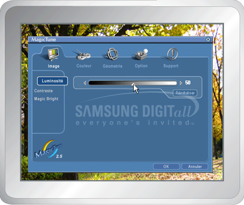
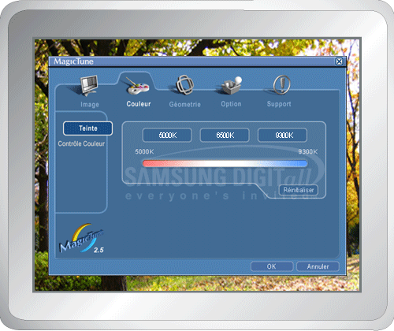
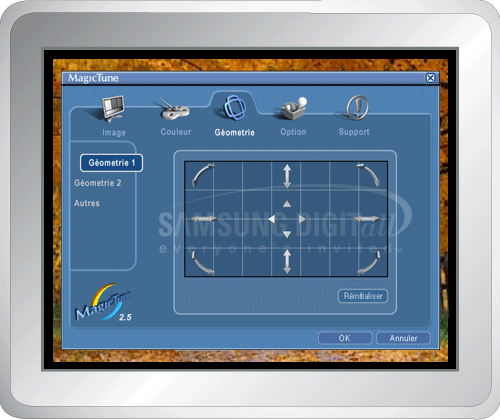
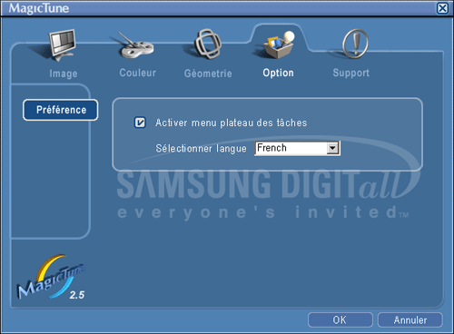
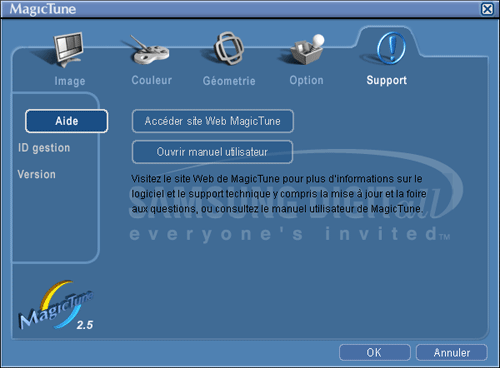

|

|
 |
MagicTune vous permet un réglage précis de l'affichage. Il vous permet aussi d'enregistrer et d'utiliser facilement la configuration de votre moniteur qui vous convient le mieux.
- Suivant les spécificités de chaque moniteur, il risque d'y avoir des différences entre les explications contenues dans le manuel et ce qu'affiche le mode OSD.
|
|
|

Pour tous les moniteurs, le mode OSD facilite le
réglage des paramètres. Lorsqu'ils sont sélectionnés, chaque onglet de la
fenêtre de contrôle affiche une description générale des éléments de réglage
du sous-menu. Lorsqu'ils sont sélectionnés, chaque onglet affiche une liste
de menus. Pour un réglage rapide des paramètres du moniteur, le mode OSD vous
permet un accès facile et agréable aux différents onglets et éléments de
sous-menus.
|
OK
|
Applique tous les changements définis puis ferme MagicTune.
|
|
Réinitialiser
|
Restaure les valeurs par défaut du moniteur des
paramètres présents dans la fenêtre active.
|
|
Annuler
|
Permet de quitter MagicTune
sans appliquer les changements définis. Si vous n'avez modifié aucun
paramètre dans la fenêtre de contrôle et que vous cliquez sur
"Annuler", cela n'aura aucune conséquence.
|

|
Permet à l'utilisateur de régler les paramètres de l'écran à sa convenance.
|
Luminosité
|
Éclairci ou assombri l'ensemble de l'écran. Les détails
de l'image des zones les plus sombres peuvent disparaître si la luminosité
n'est pas réglée comme il faut. Réglez la luminosité pour obtenir les
meilleures conditions de visualisation possibles.
|
|
Contraste
|
Règle la différence de luminosité entre les zones
claires et les zones sombres de l'écran. Il détermine la netteté de l'image.
|
|
MagicBright™
|
Premere nuovamente il pulsante MagicBright e selezionare la modalità desiderata.
- quattro diverse modalità:
- Text (Texte): Pour tout ce qui est documentation ou lors d'importants travaux dans des textes.
- Internet: Pour tout ce qui est travail dans des images complexes comme des textes et des graphiques.
- Jeu: Pour regarder des images animées comme celles d'un jeu.
- Divertissement: Pour regarder des films venant du lecteur de DVD ou d'un CD Vidéo.
- Texte: Pour tout ce qui est documentation ou lors d'importants travaux dans des textes.
- Internet: Pour tout ce qui est travail dans des images complexes comme des textes et des graphiques.
- Divertissement: Pour regarder des films venant du lecteur de DVD ou d'un CD Vidéo.
|
|
Règle la "chaleur" de l'arrière-plan du moniteur ou de la couleur
de l'image.

|
Teinte
|
Le ton de la couleur peut être changé.
- Chaude - Normale - Froide
- Personnaliser
|
|
Contrôle couleurs
|
Règle les couleurs de l'image du moniteur.
Vous pouvez modifier la couleur de votre moniteur suivant votre préférence.
|
Règle les valeurs de Position, Dimensions et Rotation.

|
Géometrie 1
|
Règle les valeurs de Position
, Dimensions et Rotation.
- Position
- Dimensions
- Rotation
|
|
Géometrie 2
|
Règle les valeurs de Coussin et tonneau, Equilibre coussin, Trapèze et Parallèle.
- Coussin et tonneau
- Equilibre coussin
- Trapèze
- Parallèle
|
|
Autres
|
Règle les valeurs de Moire (Moire), Degauss (Démagnétiser), Sidepin Corner (Coin de distorsion latérale) et de Pinbalance Corner (Coin de balance de distorsion).
- Moiré
- Démagnétisation
- Coin supérieur distorsion latérale
- Coin inférieur distorsion latérale
- Coin supérieur équilibre coussin
- Coin inférieur équilibre coussin
|
Vous pouvez configurer MagicTune en utilisant les options suivantes.

|
Préférence
|
Affiche la boîte de dialogue des préférences. Les
préférences sélectionnées sont identifiables grâce au "V" dans la
case à cocher. Pour sélectionner ou désélectionner une préférence,
positionnez votre curseur sur la case à cocher et cliquez.
- Activer menu plateau des tâches - Pour accéder aux menus de MagicTune, cliquez sur l'icône [menu Barre des tâches].
Les menus ne s'affichent pas si l'option [Activer menu plateau des tâches] est décochée dans les [Paramètres de base] de la boîte [Option].
- Sélectionner langue - La langue choisie n'affecte que l'OSD.
|
Affiche les Infos Moniteur ainsi que le numéro de version du programme et vous permet d'utiliser la fonction Aide.

|
Aide
|
Rendez vous sur le site web de MagicTune ou ouvrez les fichiers d'aide (Manuel de l'utilisateur) si vous avez besoin d'aide lors de l'installation ou de l'utilisation de MagicTune.
Le Manuel de l'utilisateur s'ouvre dans n'importe quelle fenêtre de navigation.
|
|
ID gestion
|
Ouvre une fenêtre contenant les informations relatives au moniteur telles que sa date de fabrication.
|
|
Version
|
Afficher le numéro de version de MagicTune.
|
|

 Définition de l'onglet Image
Définition de l'onglet Image Mode OSD
Mode OSD